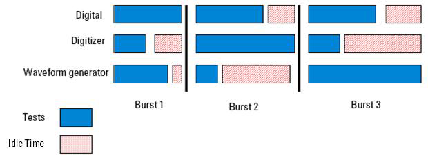
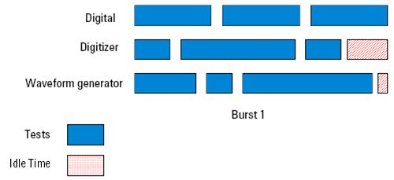
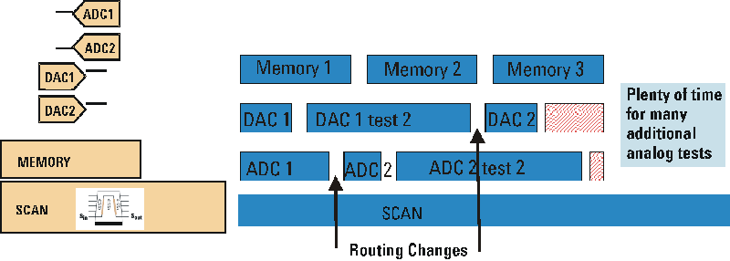

Non-blocking digital capture benefits
In SmarTest release 4.0.0 and later, non-blocking digital capture has been implemented. This allows multiple analog tests to be run in a single multi-port burst, reducing wait time and increasing throughput. See the figures below.


The implementation of non-blocking digital capture in SmarTest completes multi-port concurrent test by adding the following capabilities:
- Allows multiple analog tests during a single digital sequence
- Allows different routing and analog settings
- Allows execution of analog firmware commands during an extended digital sequence
This is illustrated in the figure below.

Functional changes
- Introduced before SmarTest 6.3.2